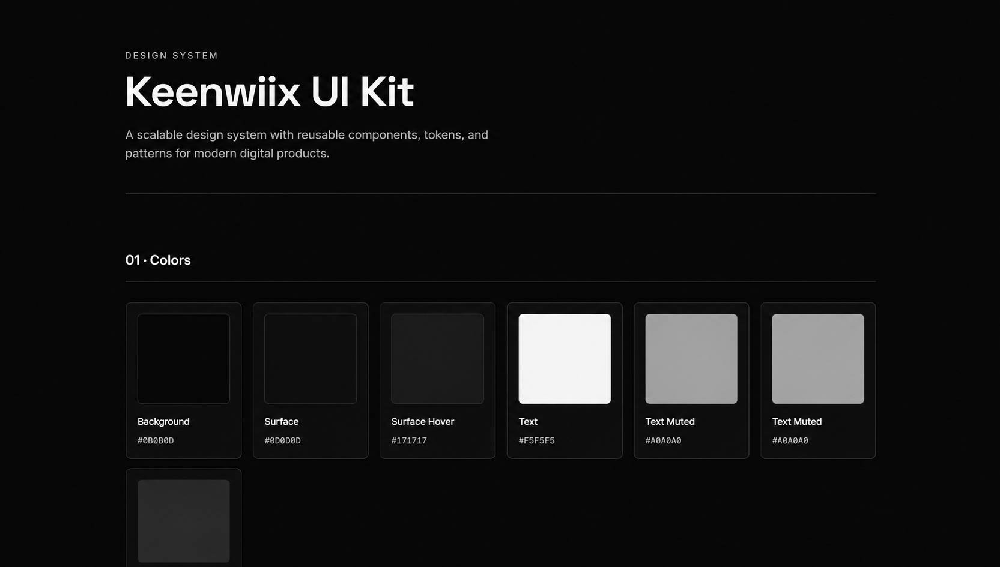

Design System
A scalable design system with reusable components, tokens, and patterns — built for consistency across enterprise applications.
View live demo
Project Overview
A comprehensive design system built to unify the visual language across multiple products within an enterprise. The system includes design tokens, reusable components, and documentation to help teams build faster and more consistently.
Problem
Multiple product teams were building inconsistent interfaces. There was no shared source of truth for colors, typography, spacing, or components — causing duplication and inconsistency.
- Inconsistent UI across products
- Designers re-inventing the same components
- Developers hardcoding values
- Slow onboarding for new team members
Research & Discovery
I audited existing interfaces, interviewed designers and developers, and analyzed industry-standard design systems like Material Design, Polaris, and Carbon.
UI Audit
Analyzed 200+ screens across 3 products
Team Interviews
12 designers and 8 developers
Benchmark
Studied Material, Polaris, Carbon
Impact Analysis
Measured time lost to inconsistency
Key Insights
- Teams wanted speed above all else
- Documentation is as important as components
- Tokens must sync between design and code
- Adoption requires internal marketing
Design Process
Audit & Foundation
Catalogued existing patterns, defined core tokens (color, type, spacing).
Component Design
Designed 80+ reusable components in Figma with variants.
Code Implementation
Built components in Storybook, synced tokens via Style Dictionary.
Documentation
Wrote usage guidelines, do's and don'ts, accessibility notes.
Rollout & Support
Onboarded teams, set up weekly office hours, iterated based on feedback.
Solution
A living design system with tokens, components, and documentation — used by 3 product teams across the company.
Design Tokens
Color, typography, spacing — synced between Figma and code
80+ Components
Buttons, inputs, cards, modals, and more
Documentation
Clear usage guidelines and examples
Storybook
Live component playground for developers
Results & Impact
"This system completely changed how we ship products. What used to take weeks now takes days."— David K., Engineering Lead
Lessons Learned
- A design system is a product, not a project
- Adoption requires constant communication
- Tokens must live in both design and code
- Documentation is what makes it stick